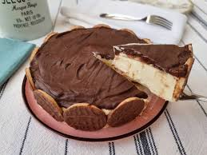

Cremosa, elegante e irresistível, a torta holandesa é uma sobremesa clássica que combina uma base crocante, recheio suave de baunilha e uma deliciosa cobertura de chocolate. Os biscoitos ao redor dão um charme especial e deixam a apresentação ainda mais bonita.
Triture os biscoitos maisena no processador até formar uma farofa fina. Misture com a manteiga derretida até obter uma massa úmida.
Forre o fundo de uma forma de aro removível, pressionando bem para deixar uniforme.
Leve ao forno preaquecido a 180°C por aproximadamente 10 minutos. Retire e deixe esfriar completamente.
Na batedeira, bata o açúcar com a manteiga até formar um creme claro e homogêneo.
Acrescente a essência de baunilha e o creme de leite gelado, batendo até obter um recheio leve e cremoso.
Misture o chocolate meio amargo derretido com o creme de leite até formar uma ganache lisa e brilhante.
Com a massa já fria, posicione os biscoitos Calipso ao redor da forma, com o lado do chocolate voltado para dentro.
Despeje o recheio sobre a massa e leve à geladeira por aproximadamente 4 horas.
Retire da geladeira, espalhe a cobertura de chocolate por cima e volte à geladeira por mais 6 horas antes de servir.
← Voltar para receitas